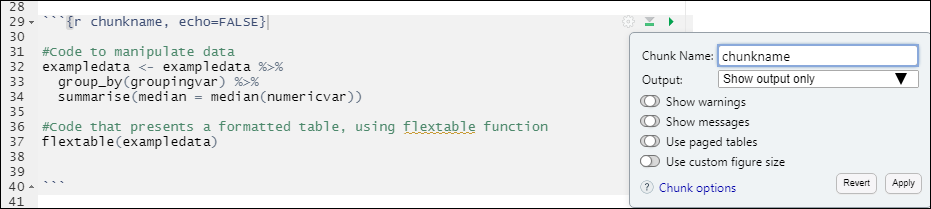

Introduction to R for Applied Epidemiology and Public Health
Welcome
Welcome to the live course “Introduction to R for applied epidemiologists”, offered by Applied Epi - a nonprofit organisation that offers open-source tools, training, and support to frontline public health practitioners.

R Markdown
This exercise focuses on creating routine reports with R Markdown. Specifically, you will create an Ebola situation report using the code you have written in the previous modules of the course.
Format
This exercise will guide you through a set of tasks.
You should perform these tasks in RStudio and on your local
computer.
Getting Help
There are several ways to get help:
- Look for the “helpers” (see below)
- Ask your live course instructor/facilitator for help
- Ask a colleague or other participant in the course for tips
- Post a question in Applied Epi Community in the category for questions about Applied Epi Training
Here is what those “helpers” will look like:
Click to read a hint
Here you will see a helpful hint!
Click to see a solution (try it yourself first!)
linelist %>%
filter(
age > 25,
district == "Bolo"
)Here is more explanation about why the solution works.
Quiz questions
Please complete the quiz questions that you encounter throughout the tutorial. Answering will help you to comprehend the material, and will also help us to improve the exercises for future students.
To practice, please answer the following questions:
Icons
You will see these icons throughout the exercises:
| Icon | Meaning |
|---|---|
| Observe | |
| Alert! | |
| An informative note | |
| Time for you to code! | |
| Change to another window | |
| Remember this for later |
Learning objectives
In this exercise you will:
- Practice creating and rendering an R Markdown script
- Use your existing code to create an Ebola R Markdown situation
report
- Adapt your R Markdown to use
paramsso that the data are filtered dynamically
Prepare
Open the R project “intro_course”, as usual, by clicking on the R project icon in the “intro_course” folder. Open your script “ebola_analysis.R”.
Create a new R Markdown script
Click to “File -> New File -> R Markdown…”.

In the window that appears:
- Select “Document” from the left menu
- Select “HTML” from the lower radio button list
- Select the checkbox that says “Use current date when rendering
document”
- Click “OK” (you can edit the title and author later)
Once the new Rmd script appears, click to “File -> Save As” and save it in the folder “intro_course/scripts” as the name “ebola_sitrep.Rmd”.
Knitting
Review the new menu of buttons across the top of this Rmd script:
- One the far left, there are horizontal buttons to toggle between
“Source” and “Visual”
- Near the center is a blue “Knit” button with a drop-down menu
- On the right is a “Run” button with a drop-down menu
- Also on the right is an “Outline” button
HTML
Click the “knit” button to render the R Markdown document as an HTML file, with only the default contents.
If no output appears or you see an error in the console, notify your facilitator. On workplace computers, rmarkdown can sometimes encounter errors. We have documented some of these at this Epi R Handbook chapter.
An HTML file is a very useful format, because you can customize the look with interactive components such as buttons, tabs, scrollable table of contents, etc.
An HTML file can be emailed as a static file, similar to a PDF or Word document. When the recipient receives it, the file will open in the internet browser - but the file is not online! It is only saved locally on their computer, but the internet browser is used to display the file. This is important to know, if you are concerned about sharing sensitive information in an HTML report.
Note, it is also possible to post an HTML file online, but this is done through a different process
Word
Now click the “knit” button again, but use the drop-down to select the option to knit to Microsoft Word
This format is very useful if you want automated analytics, but human-written interpretation in the report.
Knitting directly to PDF can be more difficult and you may encounter more challenges with formatting. So do not try it now, only at the end of the exercise if you have time. To try it later, run the following commands first, to install the “tinytex” software:
# check/install tinytex, to C: location
tinytex::install_tinytex()
tinytex:::is_tinytex() # should return TRUE (note three colons)Remember, you can always knit to Word, and then convert to PDF.
Other formats
Many other formats exist, for example:
Some other time, you can try a Powerpoint format by clicking “Presentation” in the window that appeared when you opened the Rmd for the first time.
The slides in this course are made using the {xaringan} package in conjunction with {rmarkdown}.
This tutorial was written in {rmarkdown}, used with the {learnr} package
YAML
Note the section in the top of the Rmd script. This is the “YAML”. What
does YAML stand for, you might ask? The truth is, it stands for “Yet
Another Markdown Language”. Somebody had fun creating that name.
The YAML section of an R Markdown script is delimited by three dashes on its top and bottom. If you sucessfully knitted to PDF, HTML, and Word, then your YAML might look like this:
---
title: ""
output:
pdf_document: default
html_document: default
word_document: default
date: "2022-06-09"
---Edit the YAML to look exactly like this (with your name in the
author: section). Note that the colons and indenting must
be exactly correct.
---
title: "Situation Report"
subtitle: "Ebola outbreak in Sierra Leone"
author: "(Your name or agency here)"
output:
word_document: default
date: "2022-06-09"
---Note that we have now removed any pdf_document and
html_document output options, for clarity. In this exercise
we will build a Word document report, so that it is easy to edit after
rendering.
Params
Add further lines to your YAML as shown below. Note that the colons
and indenting must be exactly correct. These will be the
params list for your report.
---
title: "Situation Report"
subtitle: "Ebola outbreak in Sierra Leone"
author: "(Your name or agency here)"
output:
word_document: default
date: "2022-06-09"
params:
district: "West II"
publish_date: "2014-12-01"
---You have now added two params values that you can access
in the rest of the script. We will use these later.
Add chunks
Practice adding a code chunk to the document:
Place your cursor in the Rmd on an empty line and press Enter a few times to clear space. Place your cursor in a middle line of the empty space.
Press
Ctrl + Alt + i(orCmd + Alt + ion mac) to make a chunk appear.
Now type some descriptive words above and outside the chunk, and write some basic R code into the chunk:
Some basic math calculations
```{r importing-data, eval=TRUE}
2+2
10/5
```Press the green arrow on the upper-right corner of the chunk to “Run” the code within the chunk
Chunk options
Now knit the report again. How does the output appear?
Can you see the simple code commands that you wrote, as well?
You are seeing the code because the chunk option default is
echo=TRUE. Scroll up to the top of the script and see the
top-most setup chunk with this code in it:
knitr::opts_chunk$set(echo = TRUE)This chunk is setting the default options for all the chunks.
Change this setting to echo = FALSE and re-knit
the report to see the result.
You can also adjust chunks individually with by typing
echo = TRUE in top of the chunk like this:
```{r importing-data, eval=TRUE, echo = TRUE}
2+2
10/5
```If the typing syntax is intimidating, you can also set the options by clicking the small “Gear” icon on the right side of the chunk and selecting from the “Output” drop-down menu. It will insert the appropriate code into this chunk’s options.

Try adjusting the options for your “math” chunk with the gear icon.
Re-knit the report as many times as you need to understand how these options work
Whether you select options for the code to appear in the report may very by the context. For a short situation update or public document you would likely not include the R code. For an analytical report, you might want to make the code available so that other scientists or readers can quickly inspect your process.
Finally, make sure that your setup chunk (at the
top of the script) default options to as below.
knitr::opts_chunk$set(echo = FALSE, message = FALSE, warning = FALSE)Text
Bullets

Using the image above as a guide, modify the default text to show the text below
For bullets, there must be a newline above the bullets, and at the end of every bullet.
Try to replicate this line of text and the three bullets below it:
Many people enjoy learning R because they seek:
- Analytical flexibility
- Advanced graphics and automated reporting capability
- To support the movement towards free, open-source software
Paragraphs
If you are writing text paragraphs and want to contine the text on a new line, note that to make a newline you need to add two spaces and hit Enter.
Inline code
You can insert R code into text in what is called “inline code”. You can create a mini R code line within some text by doing the following:
- Start the code with a backtick ` and the letter
rand a space
- Continue by writing your R code
- Finish with another backtick `
Try to recreate this line in your R Markdown, and then render the Rmd to see the output:
Today’s date is
`r Sys.Date()`and I am taking an R class!
The command Sys.Date() is convenient for inline code
because it prints the current date, according to your computer. Note
that the “Date” begins with a capital “D”.
If you use any functions in these inline commands, or and R objects or values, they must have been defined prior or above the inline code. Otherwise R return an error when rendering the Rmd.
Tips
If you want to insert extra empty lines or space in your document,
insert </br> in the text parts of your Rmd. You can
write multiple of these lines to get more space.
If you want to designate a page break (does not apply to HTML),
insert \pagebreak.
Build your report
Now that you know about YAML, knitting, code chunks, text, and inline code… begin to make your Ebola situation report!
Remove all the default text and chunks from the Rmd. Leave the
topmost setup chunk and the YAML.
Begin to transfer your R code from your “ebola_analysis.R” script into this Rmd. A few tips:
- Put code for the same task, in the one chunk
- Test your progress often, by knitting your report after adding each
chunk
- Keep your # comments in the code chunks, to inform readers of your
code
- Be aware of which dataset you are working on
(e.g.
surv,hosp,combined) and the ordering of the code
Follow this order:
- Load packages
- Import data
- Surveillance linelist
- Hospital linelists (select columns)
- Lab dataset
- Case investigation dataset (select columns)
- Clean the surveillance linelist
- Joins
- Combine the hospital datasets and join them to the surveillance
linelist
- Join the lab dataset
- Join the
investigationsdataset
- Export the cleaned
combineddataset
- Create and print descriptive tables
- Create and print plots
For the plots and tables, choose just 2-5 tables and plots to highlight in this report.
Do not include all of the exploratory analysis that you have in your ebola_analysis.R script. Keep the report relatively minimal.
Ask your facilitator for assistance if you get stuck!
Also, do not forget to save your file as you do this!
Extra - adaptable report
If you finish creating your report and still have time before the class re-convenes in the plenary debrief, follow the instructions below to make your report adaptable as the data are updated or when new data arrive.
Filter the data by district
In the YAML, you have written the parameter
district: "West II", which you can access in the Rmd via
params$district.
Add a section to your R Markdown in the Descriptive
Tables that creates a “spotlight analysis” on the
district that is set in the YAML params.
In the Rmd text, write a sentence that introduces this section as a spotlight on X district, where the X changes dynamically to print the name of the district
In a code chunk below this text, begin with the clean
combineddata frame and pipe it into afilter()function that restricts it to only rows that are equal toparams$district.Then pipe this filtered data frame into a
tabyl()function that shows the breakdown by hospital and by outcome (died).
Click to see a solution (try it yourself first!)
In the R Markdown text you would write something like:
Below is a spotlight on hospital admissions and outcomes for patients reported in
`r params$district`:
And in the code chunk you could have code like this:
# Spotlight on district defined at top of script in YAML
combined %>%
filter(district == params$district) %>% # filter data frame to the district in YAML
drop_na(outcome) %>% # remove patients with missing outcome, for clarity
tabyl(hospital, outcome) %>% # begin the cross-tabulation
adorn_totals("both") # add totals for both rows and columns==Filter the data by date
Let’s try to add a dynamic filter on combined, so that
only cases reported prior to a certain date are included in the
report.
Let’s use this threshold: Only include cases that
were reported on or before the Sunday of the week
prior to the publish_date set in the
YAML.
So in the calendar below, if the publish date is 1 December, we only show cases reported on or before 23 November. This will help reduce the perception of artificial declines in the epidemic curves, because there is some delay in the cases appearing in the surveillance dataset.
Class of the param publish_date
Ok, let’s begin. You have already created the params
value publish_date, which can be accessed within the report
by typing params$publish_date.
But what class is this value? Its class will impact how we can use this date.
Try running just params$publish_date in the R Console.
Then run class(params$publish_date). What class is this?
What function should you apply to convert it to a date?
I’ll tell you the answer: you need to wrap it in the {lubridate}
function that matches its current format (YYYY-MM-DD), like this:
ymd(params$publish_date).
Try running class(ymd(params$publish_date)) - you should
see that this value is a date.
Filter logic
We want to apply a filter to combined, using the
Monday prior to the publish date, because we know there is some
delay in the number of cases being reported.
We can return the Sunday prior to a date using
floor_date(DATE, unit = "week") from the {lubridate}
package. To return the prior Sunday, we can just subtract 7
days from the date: floor_date(DATE - 7, unit = "week")
Try to write a standalone command that creates data_date
using the above specifications.
Click to read a hint
First, define an R object data_date using
floor_date() from {lubridate} with the argument
unit = "week". Within floor_date(), place the
ymd() command and the - 7.
Then, in a separate command, use the assignment operator to re-define
combined, and pipe it through a filter().
Within the filter() function, give logical criteria for
values in the date_report column to be less or equal to the
data_date.
Click to see a solution (try it yourself first!)
# Define data date as Sunday of prior week
data_date <- floor_date(ymd(params$publish_date)-7, unit = "week")Looking at the calendar above from 2014, we can see that if the publish date is Monday 1 December, we want our report to only include cases reported through Sunday 23 November. This date will be our “data date”.
The next step is to build a filter() command using value
of data_date on the column date_report. Can
you guess how to build this filter() command?
Let’s test your guess. First, run this command and note the 24
NA (missing) date values:
summary(combined$date_report)## Min. 1st Qu. Median Mean 3rd Qu. Max.
## "2014-05-11" "2014-09-06" "2014-10-01" "2014-09-28" "2014-10-29" "2014-12-21"
## NA's
## "7"In real life, you can decide what to do with these rows, but for this exercise we want to keep them in the dataset.
Now try the filter() command that you were thinking of,
and afterwards, re-run the summary() command above. Are
those missing date rows still there?
If you ran this command, the rows would have disappeared:
# Filter date_report before data_date, and REMOVES missing date_report
combined <- combined %>%
filter(date_report <= data_date)Why? Because in R, NA is treated as infinitely large and
small, is it removed by this simple filter.
Now try this one, and use it instead. It explicitly adds a logical
criteria that keeps rows that have missing date_report.
# Filter date_report before data_date, and KEEPS missing date_report
combined <- combined %>%
filter(date_report <= data_date | is.na(date_report))str_glue()
Now that we have this “data date” defined as a value, we can use it in our outputs such as plot captions.
Go to the section of your code with plots
Add captions to at least one plot using labs(caption = )
and make the character value dynamically describe the last date eligible
for cases to be included in the plot. For example:
“650 cases were reported through 23 December 2014.”
Use str_glue() to create this string. Remember that the
syntax can include code within curly brackets, like this:
str_glue("text here {code here} text here {code here}")
(*don’t forget the quotation marks!)
Click to read a hint
Use nrow() to count the number of rows in a dataset.
Use fmt_count() to return the number of rows that meet a
certain logical criteria
e.g. fmt_count(combined, is.na(date_onset) for the number
of rows missing date of onset (and probably not shown in a plot).
Use format() to adjust how a date is displayed. E.g.
format(DATE, '%d %B, %Y') to show as 23 November 1989.
Click to see a solution (try it yourself first!)
Below is one example of a caption:
labs(
caption = str_glue("{nrow(combined)} cases were reported through {format(data_date, '%d %B, %Y')}. {fmt_count(combined, is.na(date_onset))} cases are missing date of symptom onset and not shown.")
)Order of code and text
What if you want to write a sentence at the top of your
report output, that uses this data_date value, for
example:
“As of data_date there had been XXX confirmed cases
reported.”
If this sentence is at the top of the script, will it work? Remember the commands are run in sequential order.
The command to create data_date is much lower… and the
final data frame combined is not even created until the end
of the data cleaning section.
Therefore, we should begin the text of the report output after ALL the data cleaning code chunks.
Adjust your script so that the informative text begins below the data cleaning section.
More extras
Below are more extras
Code folding
Let’s have a little bit of fun for a moment. One particularly fun option is “code folding”, which is only available for HTML reports.
Edit the
setupchunk at the top so thatecho = TRUEEdit your YAML to look like below (note the change to
output:tohtml_document:with a colon after it. And then the new line and indenting tocode_folding: hide)
---
title: "Situation Report"
subtitle: "Ebola outbreak in Sierra Leone"
author: "(Your name or agency here)"
output:
html_document:
code_folding: hide
date: "2022-06-09"
params:
district: "West II"
report_date: "2014-12-01"
---Now render your report as HTML You should see small icons on the right side of the outputs, which you can click to reveal the code. At the top-right of the output you will also see an button “Code” that offers a menu to “Show all code” or “Hide all code”.
You can read more about code folding here.
Now, revert your Rmd YAML back to a Word document output.
---
title: "Situation Report"
subtitle: "Ebola outbreak in Sierra Leone"
author: "(Your name or agency here)"
output:
word_document: default
date: "2022-06-09"
params:
district: "West II"
publish_date: "2014-12-01"
---And change your setup default options to as
below.
knitr::opts_chunk$set(echo = FALSE, message = FALSE, warning = FALSE)Table of contents
Review this chapter of the Definitive guide to R Markdown and try to create a Table of Contents. See what the output looks like in Word and in HTML outputs.
HTML tabs
Review this chapter of the Definitive guide to R Markdown and try to convert your tables and figures section to be displayed in tabs. Note that this only work if rendering to HTML output.
Themes
Review this chapter of the Definitive guide to R Markdown and try to add one of the built-in themes to your document.
Here are two examples:

End
Congratulations! You can written an R Markdown situation report with lots of interesting R code!
If you want to compare your Rmd to the one we made, open the “backups” folder in the “scripts” subfolder. There you will see R scripts reflecting the Ebola analysis at each stage of this course, and finally an Ebola Rmd.